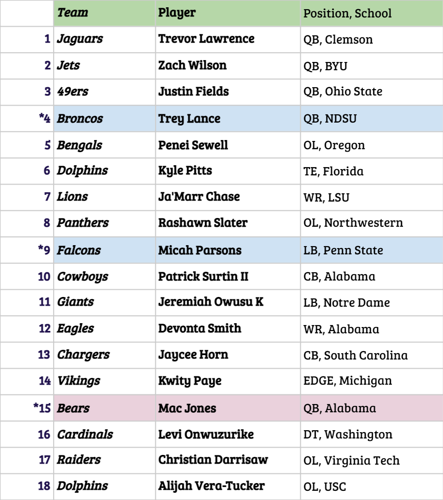
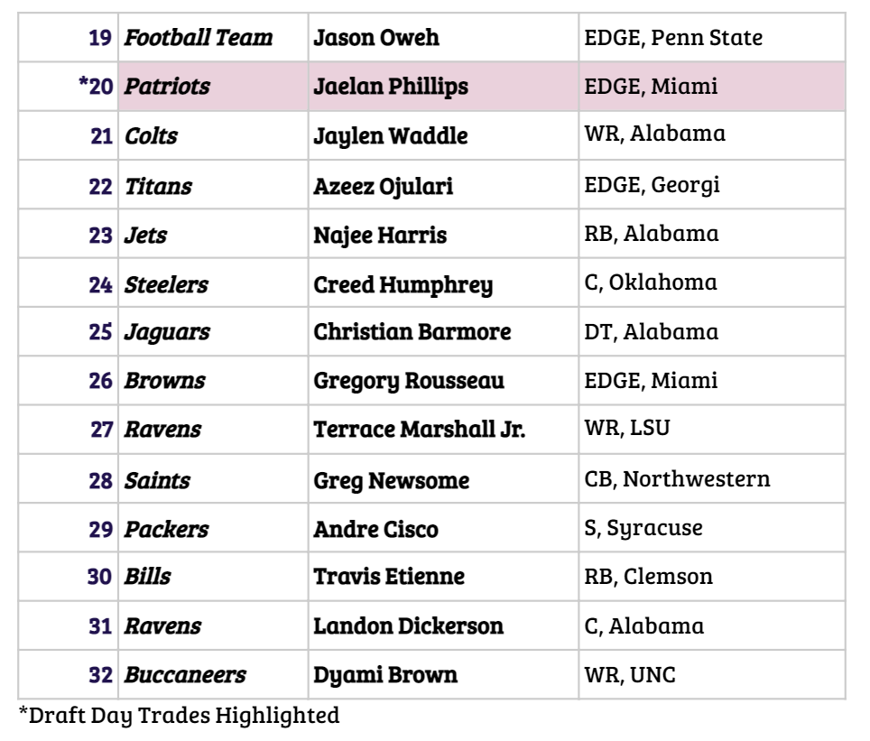
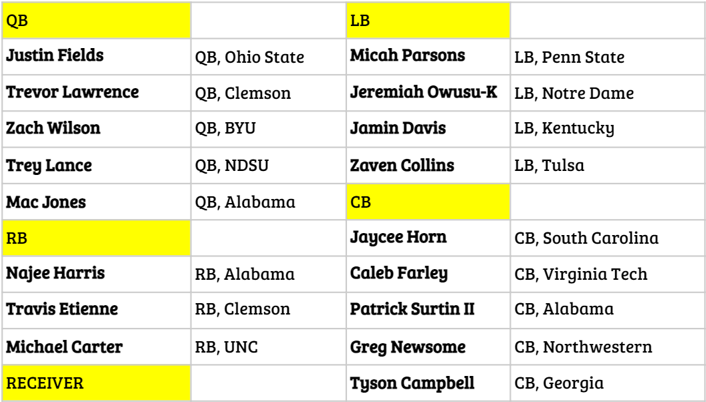
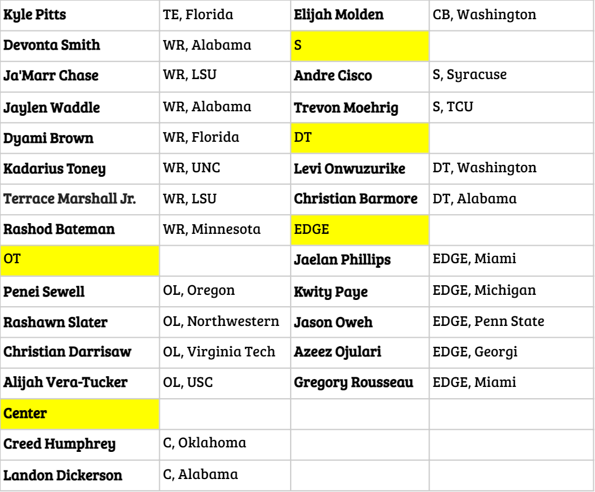

Mock Draft 2021 Plus Player Thoughts
By Anish Cherwoo | May 16, 2021
This is my mock draft for the 2021 NFL Draft. I would like to explain some of the picks and destinations that I find especially interesting.
Pick Number 4 - Trey Lance to the Broncos. This makes a lot of sense to me, as I believe a lot of teams like a lot about Lance on and off the field. They do not seem to be all in on Drew Lock, and with a special QB class this year, this is their chance to get somebody, even if he does not play this year while they see what they have in Drew Lock. Lance’s running ability will also likely provide a smoother transition to the league than many think.
Cornerbacks. While I believe there are many good ones, I like Jaycee Horn the most of the group. Surtain feels like a technician that does not have much more room to grow and nothing special physically. Horn on the other hand being faster, stronger, better at the line, and having a lot of things that he could get better at during the route is a much more tempting prospect. I need to address Farley here in that I think that in a regular year he would be in the first but with covid and limited in person interaction this year, his recurring back injury is not something that I want to spend a first round pick on. Otherwise he and Horn both have a strong case for the CB 1 in this year's draft in my opinion.
Pick Number 15 - Mac Jones to the Bears. There’s no way that Andy Dalton is the future of the Bears (despite them calling him QB 1 on their twitter). I strongly believe that the national media pushing the Mac Jones to the Niners narrative is a bunch of nonsense that is quite honestly unfathomable (watch this actually happen), so when he falls to the teens Ryan Pace and Matt Nagy who are on the way out will try to get the shiny new toy at quarterback to potentially prolong their tenures with the team. A very Bearsy move.
Pick Number 21 - Jaylen Waddle to the Colts. This was an interesting one, as I have not really seen anybody talk about Waddle falling this far, though I could be wrong. I believe Waddle is a great player, in fact I really like a lot of things about him - his speed, strength, toughness, hands at catch point, and the fact that he came back for the National Championship while still hurt. However, if we are comparing him to Devonta Smith and Ja’Marr Chase he is really not in that tier if you’re asking me which is why I find it crazy when I see him mocked above the guy I see as the best receiver in this draft in Devonta Smith. Then when you look at team needs, I just don't see how he should go top 10 or top 15 but only time will tell and I wish him luck.
 In case you would like to see my personal rankings for these players based on my knowledge (not that I am an expert or anything), because it is not the same as where teams take certain players.
 .gif)